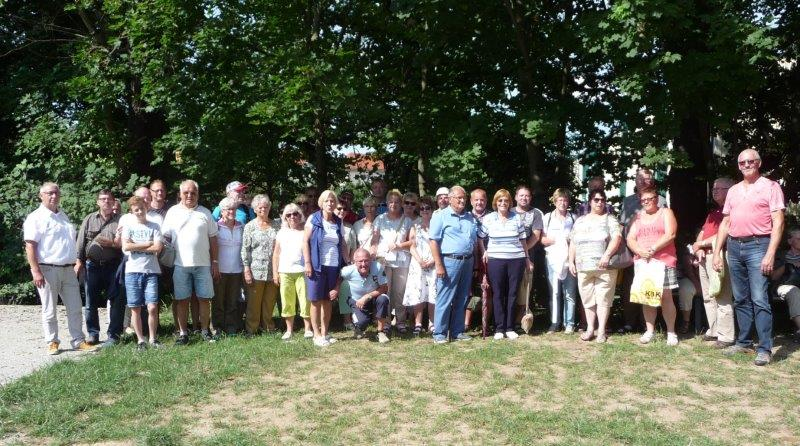
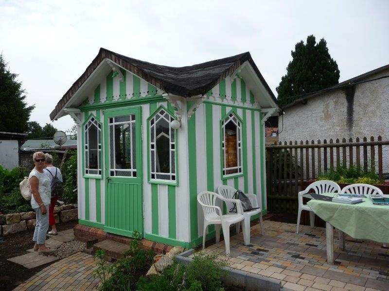

Organisiert durch den Eichsfelder Kreisverband der Kleingärtner e.V. begaben sich
am Samstag, den 08. Juli 2017, 50 Gartenfreunde, auf eine Bustour nach Apolda.
Erstes Ziel war die dortige Kleingartenanlage Naturfreunde
, dem Austragungsort
des diesjährigen Tags des Gartens des Landesverbandes Thüringen der Gartenfreunde e.V. .
Es wurde die Möglichkeiten genutzt, um in der dortigen Kleingartenanlage über den
Zaun zu schauen und so manche Anregung für die eigene grüne Oase zu erblicken.
Besonderes Interesse galt dem in der dortigen Gartenanlage, welche seit 1898 besteht,
geschaffenen Schaugarten mit der darin befindlichen restaurierten Museumslaube
aus den 1920er Jahren.

In Gesprächen unter den Ehrenamtlichen konnten Erfahrungen ausgetauscht werden, die für die eigene Vereinsarbeit genutzt werden können.
Gleichzeitig wurde die Zeit genutzt, um die Landesgartenschau in der Herressener Promenade
in Apolda zu erkunden.
Schaugärten mit neuen Trends und vielfältigen Ideen für den eigenen Garten gab es zu sehen.
Gestaltete Hochbeete und Schaubeete mit Mischkulturen gaben Inspirationen für die mögliche
Gestaltung im eigenen Kleingarten.
Aber auch so mancher Rat und praktische Tipps waren am Gärtnertreff zu bekommen.
Einhellig wurde festgestellt, dass diese Veranstaltung wieder einmal dazu beigetragen hat,
das Wir - Gefühl
unter den Ehrenamtlichen weiter zu stärken.
Gilt es doch, den Leitgedanken des im April dieses Jahres abgehaltenen 3. Kreisverbandstages
Das Kleingartenwesen in unserem Eichsfeld - Gemeinsam in eine sichere Zukunft
mit aktiven Handeln zu untersetzen.
So sind vor allem unter den Bedingungen der demografischen Situation neuen Ideen notwendig,
um vor allem junge Familien für das schöne Hobby Kleingarten
zu begeistern.
Für die Gartenfreunde in den 54 Vereinen im Kreisverband ist es ein erklärtes Ziel,
dazu beizutragen, dass die grünen Oasen als soziale und ökologische Lebensräume
in den Städten und Gemeinden entsprechend genutzt und gestaltet werden.
Bernd Reinboth
1. Vorsitzender
Eichsfelder Kreisverband der Kleingärtner e.V.